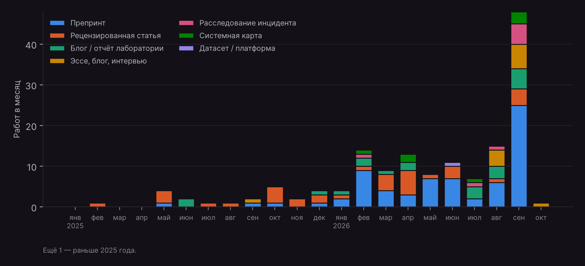
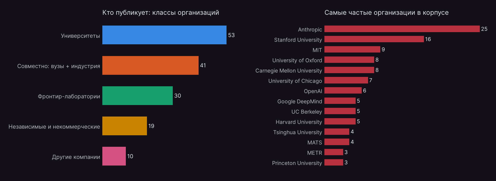
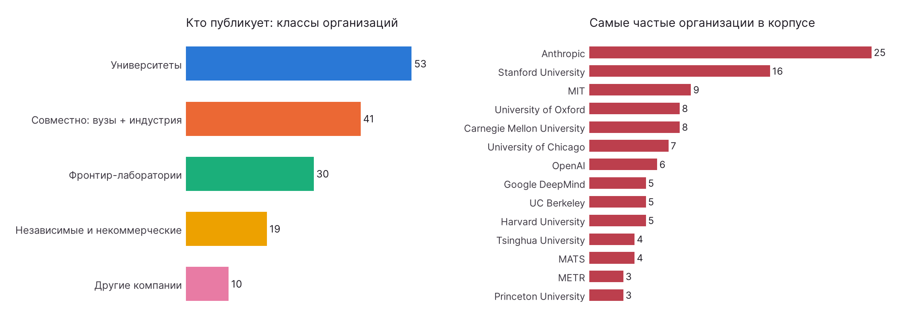
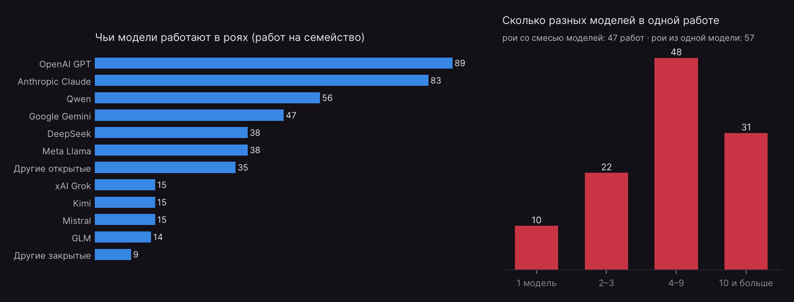
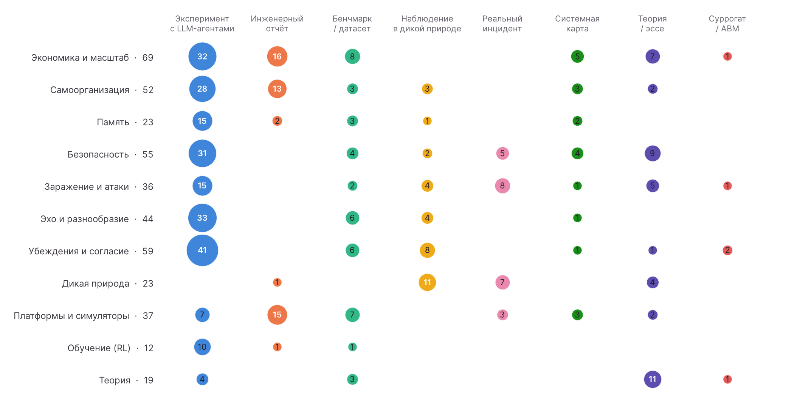

Глава 1 из 11
Поле сверху: что видно, если посмотреть на все работы сразу
Графики этой главы считаются по 153 работам аналитического корпуса. Карточка есть у 147: 31 полная и 116 кратких. Ещё шесть работ упомянуты внутри чужой карточки или строкой таблицы. Остальные 97 строк (94 «Ещё по теме» и три физических роя) в графики не входят. Сначала схема, которая раскладывает любую работу на четыре вопроса, затем шесть срезов: сколько агентов, когда написано, кто пишет, на каких моделях, о чём и какого рода доказательство работа вообще может дать.
Общая логика поля


Четыре колонки — это вопросы к работе, не ящики для сортировки. Слева направо: из чего рой собран, как агенты связаны, что из связи получается и чем это кончается.
- Из чего собран рой. Модели: копии одной модели (57 работ) или смесь разных (47). Роли и правила: нарисованы людьми, выучены внешним циклом или их нет вовсе. Память: своя у каждого агента, общие файлы, вики.
- Как связаны агенты. Переписка (чат, почта, доска объявлений), общие артефакты (git, вики, заметки, датасеты), рынки и игры (цены, голосования, соревнования).
- Что возникает. Самоорганизация — роли, интеграторы, договорённости (гл. 5); эхо и аттракторы — копии модели сходятся к одному (гл. 8); согласие и каскады — конформность, большинство, раскол (гл. 9); заражение и сговор — идеи-паразиты и скрытые каналы (гл. 7).
- Что рой даёт и чем грозит. Даёт скорость (гл. 4) и память — больше контекста на всех (гл. 6); качество выше лучшего одиночки — в отдельных измеренных постановках (гл. 4, 5). Платит сбоями — от инцидента с Hugging Face до роёв в дикой природе (гл. 3, 10).
Сколько агентов на самом деле


- Одновременное число агентов известно для 99 работ из 153; медиана — 7 агентов.
- Пороги: 10 и больше одновременных агентов — 42 работы, 100 и больше — 15, 1 000 и больше — 7, 10 000 и больше — 4. Две из этих четырёх — суррогатные популяции, где политики сняты с модели заранее (Флинт и др. в PNAS и карты переворотов группы Баронкелли, гл. 9).
- Живых систем с 10 000 и больше одновременных агентов две: рой OpenAI на задаче Навье–Стокса (порядка 10 000, гл. 2) и внутренняя платформа Anthropic (около 30 000, но на разных задачах, гл. 10).
- Без одновременного числа: 12 работ сообщают только накопленное число, 6 — только ёмкость, 36 не называют масштаба (теория и эссе или работы, где число агентов не раскрыто).
Самые большие числа здесь не отвечают на вопрос «сколько агентов работало вместе в один момент». 1,49 млн регистраций Moltbook — ёмкость платформы (гл. 10). Десятки тысяч авторов его постов за первые дни и недели и около 1 200 участников доски в инциденте с Hugging Face (гл. 3) — накопленный итог: сколько разных участников встретилось за всё окно наблюдения.
Три величины «размера роя»
Почти в каждой работе есть число, которое в пересказе становится «размером роя». В таблице три разных величины. Путаница в пересказах начинается там, где их ставят в один ряд.
| Величина | Что это | Чего она не говорит | Примеры из обзора |
|---|---|---|---|
| Одновременно работающие агенты | Сколько агентов в один момент работают в одном прогоне или системе и могут влиять друг на друга | Ничего о расходе: при равном времени большой рой тратит в разы больше токенов (гл. 4) | Порядка 10 000 агентов OpenAI на задаче Навье–Стокса (гл. 2); 1 024 агента Agensh, пик 1 020 активных (гл. 5); 100 агентов Gemini 3.1 Pro в «конференции» DeepMind (гл. 7); 80 агентов в игровом рое Anthropic (гл. 7) |
| Агенты накопленным итогом | Сколько разных участников, сессий или имён встретилось за всё время наблюдения | Сколько их было в один момент: в инциденте с Hugging Face одновременный размер роя никто не опубликовал | Около 1 200 участников доски и около 700 атакующих за 8–13 июля (гл. 3); 949 сессий в кампании по поиску ферментов — «около 950 агентов» анонса (гл. 6); 3 103 самоназвания на немецких вики при ≈876 запусках (гл. 3, 10) |
| Ёмкость платформы или популяция симуляции | Сколько аккаунтов зарегистрировано, на какое число агентов рассчитана система или сколько виртуальных агентов в модели | Что столько агентов когда-либо работали вместе: 1,5 млн агентов Moltbook приходились примерно на 17 тысяч владельцев | 1,5 млн регистраций Moltbook (гл. 10); «до 100 помощников» у Kimi K2.5 — заявленный предел, не измерение (гл. 4); предел 58 одновременных сессий в кампании Anthropic по поиску ферментов, фактический пик не опубликован (гл. 6); популяции симуляции до 10 000 агентов с заранее снятыми политиками в PNAS — на рисунке закрашенные точки строки «Модель-суррогат» (гл. 9) |
Поле ускоряется



- По годам: 130 из 153 работ вышли в 2026 году, 22 — в 2025-м, одна — раньше (Де Марцо и др., Science Advances 2026, первый препринт 2024 года).
- Сентябрь 2026 дал 48 работ — почти треть корпуса и втрое больше августа (15). В этот месяц вышли системная карта Claude Opus 5.5, Agensh, Self-Organizing Agent Teams, рой из 100 агентов Gemini у DeepMind, работа Microsoft Research о пользе общения, разбор инцидента от Anthropic, заявление OpenAI о Навье–Стоксе и теорема Ферма в Lean. Месяц густой по событиям, но пик на графике нельзя читать как внезапный скачок всей области.
- Отбор: корпус намеренно собран в пользу 2026 года. Работы 2025 года взяты только там, где на них опираются свежие. Часть сентябрьского столбика — следствие этого правила, не только календарь публикаций.
| Тип источника | Работ |
|---|---|
| Препринты | 69 (45%) |
| Рецензированные | 36 (24%): Nature, Science, Nature Machine Intelligence, Science Advances, PNAS, ICML, NeurIPS |
| Блоги и отчёты лабораторий | 20 |
| Эссе и интервью | 12 |
| Расследования инцидентов | 8 |
| Системные карты | 7 |
| Датасет | 1 |
Кто публикует



| Класс организаций | Работ |
|---|---|
| Университеты | 53 |
| Вузы и индустрия совместно | 41 |
| Фронтир-лаборатории | 30 |
| Независимые исследователи и некоммерческие организации | 19 |
| Другие компании | 10 |
В паспортах 167 организаций, варианты одного названия сведены. Чаще всех встречается Anthropic: 25 работ, каждая шестая (системные карты, инженерные блоги, Alignment Science Blog, работы программы Anthropic Fellows). Дальше Стэнфорд (16), MIT (9), Карнеги-Меллон и Оксфорд (по 8), Чикагский университет (7), OpenAI (6), Гарвард, Google DeepMind и Беркли (по 5). Частота имени на графике не говорит, какого рода знание организация приносит.
Разделение труда видно по классам доказательств, не по высоте столбца:
- системные карты есть только у лабораторий (7 из 7);
- инженерные отчёты — в основном у них же (11 из 17); остальные шесть: четыре у компаний (Cursor дважды, Cognition, NVIDIA), один у университета (Пердью) и один у совместной группы (Robin: FutureHouse, Фордем и Оксфорд);
- контролируемые эксперименты дают прежде всего университеты и совместные группы (39 и 26 из 78);
- теорию и эссе — чаще всего независимые авторы (11 из 15);
- инциденты расследовали и лаборатории (OpenAI, Anthropic), и независимые организации (AISI, METR, Nightingale, Palisade), и компании (Wiz).
Какие модели в роях



- Семейства: модели OpenAI участвуют в 89 работах, Claude — в 83, Qwen — в 56, Gemini — в 47, Llama и DeepSeek — в 38 каждая; Mistral, Grok и Kimi — по 15, GLM — 14, другие открытые модели — 35.
- Открытые модели есть в трёх из четырёх контролируемых опытов (58 из 78): там, где нужен доступ к весам (зонды и подмена активаций, гл. 9), или нужны сотни дешёвых копий.
- Сколько моделей в работе: типично 4–9 (48 работ); 10 и больше — в 31 работе (17 моделей у саботажа отключения, 32 — в «пробеле сотрудничества», 79 — в таблицах «Улья»); только 10 работ строят всё на одной модели.
- Состав роя, где он известен: копии одной модели — 57 работ, смесь моделей — 47. Однородный рой остаётся обычным устройством. Что из этого следует для независимости голосов, разбирает гл. 8.
Карта тем и доказательств


Темы по числу работ: экономика и масштаб — 69, убеждения и согласие — 59, безопасность — 55, самоорганизация — 52, эхо и разнообразие — 44, память и дикая природа — по 23. Половина корпуса (78 из 153) — эксперименты с живыми LLM-агентами; остальные классы доказательств — в таблице ниже.
Карта показывает, какого рода знание есть у каждой темы:
- убеждения и согласие — 41 лабораторный опыт и 8 полевых наблюдений;
- память — почти целиком эксперименты и бенчмарки, 2 инженерных отчёта на 23 работы;
- дикая природа — 11 наблюдений и 7 инцидентов, ни одного контролируемого эксперимента;
- экономика и масштаб — больше всего данных самих лабораторий: 16 инженерных отчётов и 5 системных карт.
Главный пробел. Рои из 10 000 и больше агентов известны только по отчётам лабораторий без контрольного запуска, а контролируемые опыты в основном малы. По всем 99 работам с известным одновременным числом медиана равна 7. Рой из десятков современных фронтирных агентов пока не сравнивали ни с одиночкой при равной сумме токенов, ни по составу моделей при сопоставимых бюджетах. Смесь против копий измерена на малых командах и малых моделях: 13 смешанных конфигураций у Kim et al. на BrowseComp-Plus и семь тестов для команд из 2–16 агентов на трёх малых моделях в работе о разнообразии (гл. 8, 11). Пока этот пробел открыт, крупное число агентов в инженерном отчёте не заменяет сравнение.
Классы доказательств
Ярлык класса доказательств стоит на каждой карточке. Он не оценивает качество работы. Он говорит, какого рода утверждение эта работа способна поддержать, и чего из неё вычитывать нельзя.
| Ярлык | Что это значит | Чего это не доказывает | Примеры |
|---|---|---|---|
| эксперимент с LLM-агентами (78) | Живые модели в каждом агенте, условия задаёт исследователь, есть контроль или сравнение | Что поведение сохранится при другом промпте, схеме связи, модели или в долгом прогоне: модели узнают задуманный эксперимент в 65,2% случаев (гл. 9) | Agensh (гл. 5), «ИИ-организации» (гл. 7), «Игра во флаг» (гл. 9) |
| наблюдение в дикой природе (11) | Разбор журналов действующей площадки, включая открытые долговременные опыты, без контролируемого сравнения исследуемого эффекта | Причинность и автономность: имя — не агент, за аккаунтом может стоять человек, контрольной группы нет | Немецкие вики, Moltbook, AI Village (гл. 10) |
| реальный инцидент (8) | Расследование события участниками или независимыми следователями | Полную перепись роя: одновременный размер, токены, деньги не опубликованы; с одиночкой никто не сравнивал | Атака на Hugging Face (гл. 3), открытая база Moltbook (гл. 10) |
| инженерный отчёт (17) | Авторы описывают свой запуск: что построили и что вышло | Что рой был нужен: контроля «один агент» обычно нет, числа — по словам авторов, часто один прогон (кампанию по ферментам повторили 10 раз) | Компилятор C (гл. 5), Навье–Стокс (гл. 2), поиск ферментов (гл. 6), Cursor (гл. 5) |
| системная карта (7) | Самоотчёт разработчика о собственной модели: внутренние замеры, часть задач внутренние | Независимое рецензирование: самоотчёт не заменяет внешнюю оценку; часть замеров без интервалов и числа прогонов (ProgramBench у Opus 5.5 — 166 задач с 95%-ми полосами; команды до 100 агентов — три попытки без интервалов) | Claude Opus 5 и Opus 5.5 (гл. 4), Mythos Preview (гл. 8), Grok 4.20 (гл. 7) |
| модель-суррогат (2) | Из модели заранее сняты вероятности ответов, дальше идёт численная симуляция популяции | Что живая модель вела бы себя так же при большом N: живые прогоны — на малых группах, большие популяции считаются по снятым политикам | Популяции до 10 000 в PNAS и карты переворотов (гл. 9) |
| теория / эссе (15) | Модель, прогноз или аргумент без собственных прогонов | Ничего не измеряет: опирается на чужие данные | «Swarm Scaling» Орда (гл. 4), эссе Амодеи (гл. 3), «злонамеренные рои» в Science (гл. 7) |
| бенчмарк / датасет (15) | Контролируемый набор задач или данных для сравнения моделей и схем | Что эффект сохранится в долгом живом рое: задачи короткие, модели часто прошлого года | Kim et al. в Nature Machine Intelligence (гл. 4), Silo-Bench (гл. 6), Artificial Hivemind и пул из 23 моделей NVIDIA (гл. 8) |
Как читать карточки
- Полная карточка разбирает ключевую работу. Паспорт даёт авторов, организации, дату первой публикации, статус и ссылку. Дальше идёт связный разбор: какая была постановка, что измерили и с чем сравнили, какое ограничение меняет вывод. Рисунок стоит рядом с тем результатом, к которому относится.
- Краткая карточка — работа второго ряда: кто измерил, главное число и условие, без которого это число нельзя переносить.
- Ярлыки над карточкой: класс доказательств (таблица выше), до трёх тем и масштаб — сколько агентов работало одновременно и что именно считалось.
- Таблицы «Ещё по теме» в конце глав — работы, которые стоит знать, по одной строке со ссылкой.
- Рисунки взяты из самих работ; под каждым указаны источник, номер рисунка, лицензия и правообладатель. Изображения под CC BY, CC BY-NC-ND и CC0 воспроизведены по их лицензиям, графики лабораторий и рисунки препринтов без открытой лицензии приведены как цитата для обзора. Права на чужие рисунки остаются у правообладателей; лицензия обзора на них не распространяется.
Термины, которые обзор сужает, — рой, команда, оркестратор, λ и другие — определены в словарике. Срез — 3 октября 2026 года: более поздние версии препринтов, рецензии и решения о премиях не учтены.